DESeq2 Analysis with R: Part 02
Bioinfo-Core @ MPI-IE
Wed Apr 9 09:36:38 2025
Preparation/Repetition (15 min)
Load packages
suppressPackageStartupMessages({
library("tidyverse")
library("DESeq2")
library("pheatmap")
library("patchwork")
})
# define some convenience function for plotting
source('funcs.R')Remember how important sessionInfo() is:
sessionInfo()## R version 4.2.3 (2023-03-15)
## Platform: x86_64-conda-linux-gnu (64-bit)
## Running under: Ubuntu 24.04.2 LTS
##
## Matrix products: default
## BLAS/LAPACK: /home/runner/micromamba/envs/Rdeseq2/lib/libopenblasp-r0.3.29.so
##
## locale:
## [1] LC_CTYPE=C.UTF-8 LC_NUMERIC=C LC_TIME=C.UTF-8
## [4] LC_COLLATE=C.UTF-8 LC_MONETARY=C.UTF-8 LC_MESSAGES=C.UTF-8
## [7] LC_PAPER=C.UTF-8 LC_NAME=C LC_ADDRESS=C
## [10] LC_TELEPHONE=C LC_MEASUREMENT=C.UTF-8 LC_IDENTIFICATION=C
##
## attached base packages:
## [1] stats4 stats graphics grDevices utils datasets methods
## [8] base
##
## other attached packages:
## [1] patchwork_1.2.0 pheatmap_1.0.12
## [3] lubridate_1.9.3 forcats_1.0.0
## [5] stringr_1.5.1 dplyr_1.1.4
## [7] purrr_1.0.2 readr_2.1.5
## [9] tidyr_1.3.1 tibble_3.2.1
## [11] ggplot2_3.5.1 tidyverse_2.0.0
## [13] DESeq2_1.38.0 SummarizedExperiment_1.28.0
## [15] Biobase_2.58.0 MatrixGenerics_1.10.0
## [17] matrixStats_1.3.0 GenomicRanges_1.50.0
## [19] GenomeInfoDb_1.34.9 IRanges_2.32.0
## [21] S4Vectors_0.36.0 BiocGenerics_0.44.0
##
## loaded via a namespace (and not attached):
## [1] bitops_1.0-7 fontawesome_0.5.2 bit64_4.0.5
## [4] RColorBrewer_1.1-3 httr_1.4.7 tools_4.2.3
## [7] bslib_0.7.0 utf8_1.2.4 R6_2.5.1
## [10] KernSmooth_2.23-24 DBI_1.2.3 colorspace_2.1-0
## [13] withr_3.0.0 tidyselect_1.2.1 bit_4.0.5
## [16] compiler_4.2.3 cli_3.6.3 DelayedArray_0.24.0
## [19] labeling_0.4.3 sass_0.4.9 scales_1.3.0
## [22] genefilter_1.80.0 digest_0.6.36 rmarkdown_2.27
## [25] XVector_0.38.0 pkgconfig_2.0.3 htmltools_0.5.8.1
## [28] fastmap_1.2.0 highr_0.11 rlang_1.1.4
## [31] RSQLite_2.3.4 jquerylib_0.1.4 generics_0.1.3
## [34] farver_2.1.2 jsonlite_1.8.8 BiocParallel_1.32.5
## [37] vroom_1.6.5 RCurl_1.98-1.14 magrittr_2.0.3
## [40] GenomeInfoDbData_1.2.9 Matrix_1.6-5 Rcpp_1.0.12
## [43] munsell_0.5.1 fansi_1.0.6 lifecycle_1.0.4
## [46] stringi_1.8.4 yaml_2.3.8 zlibbioc_1.44.0
## [49] grid_4.2.3 blob_1.2.4 parallel_4.2.3
## [52] crayon_1.5.3 lattice_0.22-6 Biostrings_2.66.0
## [55] splines_4.2.3 annotate_1.76.0 hms_1.1.3
## [58] KEGGREST_1.38.0 locfit_1.5-9.9 knitr_1.47
## [61] pillar_1.9.0 geneplotter_1.76.0 codetools_0.2-20
## [64] XML_3.99-0.17 glue_1.7.0 evaluate_0.24.0
## [67] png_0.1-8 vctrs_0.6.5 tzdb_0.4.0
## [70] gtable_0.3.5 cachem_1.1.0 xfun_0.45
## [73] xtable_1.8-4 survival_3.7-0 AnnotationDbi_1.60.0
## [76] memoise_2.0.1 timechange_0.3.0Load data
data <- readr::read_tsv("data/myeloma/myeloma_counts.tsv")## Rows: 57905 Columns: 19
## ── Column specification ────────────────────────────────────────────────────────
## Delimiter: "\t"
## chr (1): gene_id
## dbl (18): JJ_CTRL_1, BM_CTRL_2, BM_CTRL_3, BM_AMIL_1, BM_AMIL_2, BM_AMIL_3, ...
##
## ℹ Use `spec()` to retrieve the full column specification for this data.
## ℹ Specify the column types or set `show_col_types = FALSE` to quiet this message.data %>% head()Load Metadata
metadata <- readr::read_tsv("data/myeloma/myeloma_meta.tsv")## Rows: 18 Columns: 3
## ── Column specification ────────────────────────────────────────────────────────
## Delimiter: "\t"
## chr (3): sample, celltype, condition
##
## ℹ Use `spec()` to retrieve the full column specification for this data.
## ℹ Specify the column types or set `show_col_types = FALSE` to quiet this message.metadata <- metadata %>% mutate_if(is.character,as.factor)
metadata %>% head()Define Design
my_design <- ~ celltype + conditionCreate DESeq Object
dds = data + metadata + designdds <- DESeqDataSetFromMatrix(
countData=data %>% column_to_rownames("gene_id"),
colData=metadata,
design=my_design)## converting counts to integer modeclass(dds)## [1] "DESeqDataSet"
## attr(,"package")
## [1] "DESeq2"dim(dds)## [1] 57905 18First Inspection (PCA)
Previously you noticed that the PCA shows a problem with our data.
dds %>% PCA_tm
# DESeq2::plotPCA does not show this very clearly
# dds %>% rlog %>% plotPCA(intgroup=c("celltype", "condition")) # rlog slow
# dds %>% vst %>% plotPCA(intgroup=c("celltype", "condition")) # vst fasterPoll 2.1: What should we do next ?
Pre-processing (40min)
Pre-processing is easier if done at the level of the dds object - and more consistent to keep data and metadata in sync.
It also tends to be iterative.
Filter Samples
Task (3 min): Filter the problematic samples (columns 1 and 7) from dds object and produce a new PCA plot.
Hint: Although the dds object is a more complex data
class it also has dimensions assigned – check dim(dds) –
and samples can be un/selected like columns in a standard
dataframes.
dds_clean <- dds[, -c(1,7)]
dds_clean %>% PCA_tm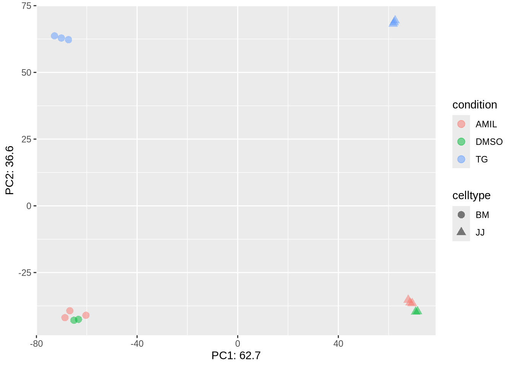
Filter Genes
- remove genes (rows) that have very low counts across samples
- arbitrary threshold: < 1, < 10
- benefits:
- increase robustness of analysis (parameter estimates)
- reduce multiple testing issue
- reduces memory size of ‘dds’ object => increases the speed
Task (5 min) Filter out the genes from dds_clean that have a total amount of only zero or 1 counts. Based on this filtering define a new data set and inspect its dimensions
Hint 1: Have a look at the output of
dds_clean %>% counts %>% rowSums() %>% head()
Poll 2.2 How many samples and genes are left in the filtered data set?
Relevel Factors
Remember: factors are used to represent categorical data !
Internally they are stored as integers and per default they are sorted alphanumerically. It may be more convenient to sort them by some user defined order - this is called relevelling
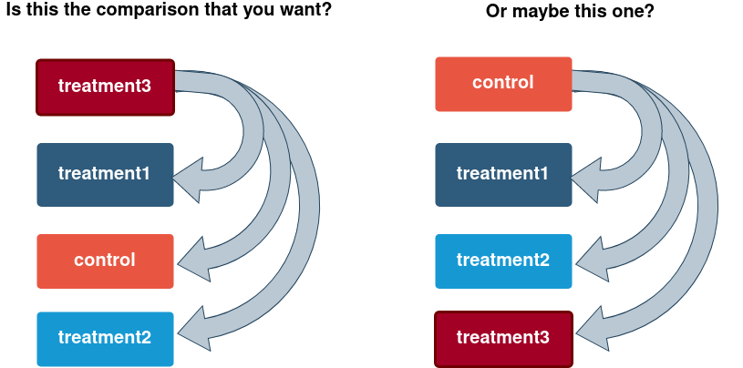
The values and default level order of factor “condition”:
#initial factor arrangement:
dds_clean$condition## [1] DMSO DMSO AMIL AMIL AMIL DMSO DMSO AMIL AMIL AMIL TG TG TG TG TG
## [16] TG
## Levels: AMIL DMSO TGTask (5 min) Reorder the condition with ‘DMSO’ as baseline.
Hint: Redefine dds_clean$condition using the
relevel function
This should be the order after releveling:
## [1] DMSO DMSO AMIL AMIL AMIL DMSO DMSO AMIL AMIL AMIL TG TG TG TG TG
## [16] TG
## Levels: DMSO AMIL TGNotice: Per default DESeq2 will make comparisons with respect to the 1st level, unless specified more explicitly using “contrasts” (see tomorrow).
Preprocessing Summary
We have now covered the most important preprocessing steps:
- load software packages and data
- define DESeq data object
- count data:
counts()– not yet normalized. data frame of integers - meta data:
colData()– added data on samples. data frame of numerical or categorical variables - design:
design()– variables to be modeled. formula will be converted to design matrix with dummy variables
- count data:
- Data Exploration: PCA
- Filtering & Relevel
This is before any statistical analysis ! A real-world analysis would likely be iterative
Message: Document your decisions, parameters, workflows and software versions carefully - use scripts or notebooks !
Some more Checks
Factorial Design
meta = dds_clean %>% colData %>% data.frame
( design_table <- meta %>% select(-sample) %>% table )## condition
## celltype DMSO AMIL TG
## BM 2 3 3
## JJ 2 3 3design_table %>% pheatmap(cluster_cols=F, cluster_rows=F, display_numbers=T, fontsize_number=10)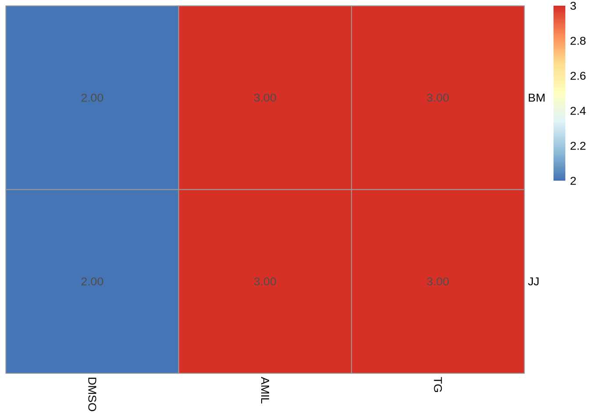
Notice: the original design may have changed as a result of sample filtering
Goal and Factorial Plot
To highlight the goal of the subsequent analysis it will be useful to focus on a single gene and highlight the effects of the different factor level combinations (!) on the mean expression
gene_select <- "ENSG00000003509"
gene <- dds_clean %>% counts %>% as_tibble(rownames='gene_id') %>%
filter(gene_id==gene_select) %>%
pivot_longer(-gene_id, names_to = "sample", values_to = "count") %>% # convert to long
inner_join(meta, by="sample") # add sample metadata from meta
gene %>%
ggplot(aes(x=condition, y=count, col=celltype, group=celltype)) +
geom_point(size=1) +
stat_summary(fun=mean, geom="line",linewidth=2)
In the following we will assess observed differences in gene expressions for different factor levels and contrasts.
The key idea is that some variations can be modeled (e.g. by the mean expression values in each cell shown as lines) , while other variability remains unaccounted for.
The combination of explainable changes and remaining variability will determine whether we consider a gene as differential for given contrasts of interest.
Break - 10 min
The DESeq workflow (60 min)
Everything we did until now was setup - and before any normalization, parameter estimates or statistical testing.
Luckily for much of the following DESeq2 provides a convenient wrapper function which takes a dds object, modifies it and returns a new dds object. To save memory we often just overwrite the old objects
dds_clean <- DESeq(dds_clean)
dds_clean <- DESeq(dds_clean)## estimating size factors## estimating dispersions## gene-wise dispersion estimates## mean-dispersion relationship## final dispersion estimates## fitting model and testingAs you can tell from the verbose output, several distinct steps have been performed that are wrapped together in the DESeq() function. The 3 main steps are of the workflow are:
- Normalization (each sample) - estimateSizeFactors()
- Estimating dispersion (\(\to\) variance) (for each gene) - estimateDispersions()
- Estimating GLM parameters and test (for each gene) - nbinomWaldTest()
We will briefly describe them below.
Normalization and size factors
As mentioned yesterday, raw counts cannot be directly used to compare samples. To allow comparison we need to normalize. Note that this is also needed for exploratory analysis and visualisation.
A couple of reasons for normalization include:
sequencing depth

gene length

compositional bias

A number of commonly used normalization techniques:
| method | takes into account: |
|---|---|
| CPM | sequencing depth |
| RPKM | sequencing depth and gene length |
| DESeq2 size factor | sequencing depth and RNA composition |
… and many others exist.
DESeq2 Workflow for the ‘median of ratios’:
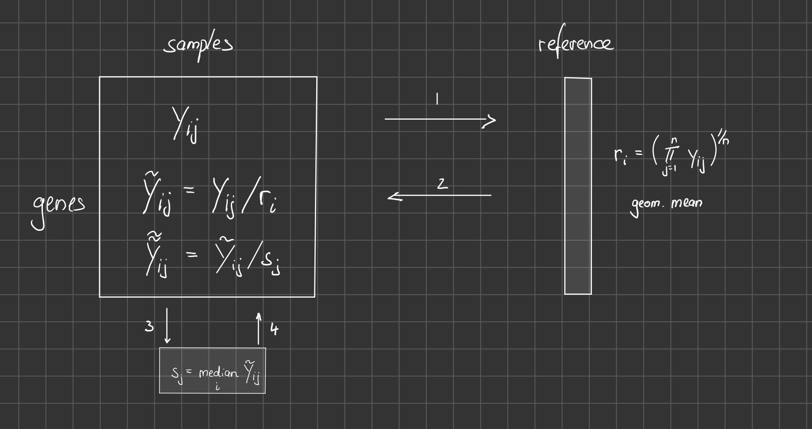
Task (5 min): Plot a heatmap of the first 10 genes (rows) of the counts matrix and add the metadata after DESeq was run as above.
Hint: Remember that both the data and the metadata can be obtained from the dds object (counts(), colData()), but you might want to convert the output of colData() to a data frame, such that it can be passed as ‘annotation’ to pheatmap
Y <- dds_clean %>% counts %>% head(10)
meta <- dds_clean %>% colData %>% data.frame %>% select(-sample)
pheatmap(Y, annotation=meta)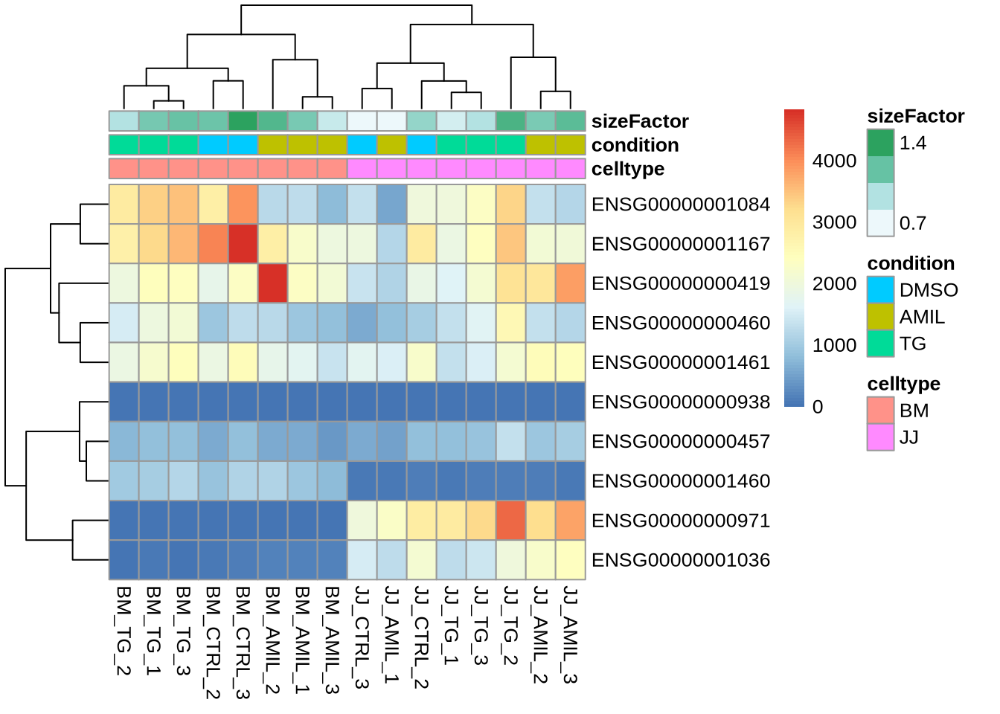
Notice:
- a size factor was added to each sample (during the DESeq2 run)
- colours can of course be customized (as shown before)
- pheatmap is strict about input formats \(\to\) convert annotations to data frame
Task (2 min): The counts() function has a parameter (normalized=TRUE) to extract the normalized counts after DESeq2 is run. Modify the above to plot the same heatmap with normalized counts and observe the differences.
Remember that the size factor for each sample (meta$sizeFactor) is a sophisticated way to account for sequencing depth and underpins the normalization used above. It is good practice to inspect the size factors and try to detect outlier samples
Task (5 mnin):
- look at the distribution of size factor over all samples (e.g. summary)
- add the sequencing depth as additional column to metadata
meta - plot the size factor vs sequencing depth
## Min. 1st Qu. Median Mean 3rd Qu. Max.
## 0.6668 0.8884 1.1038 1.0350 1.1731 1.4179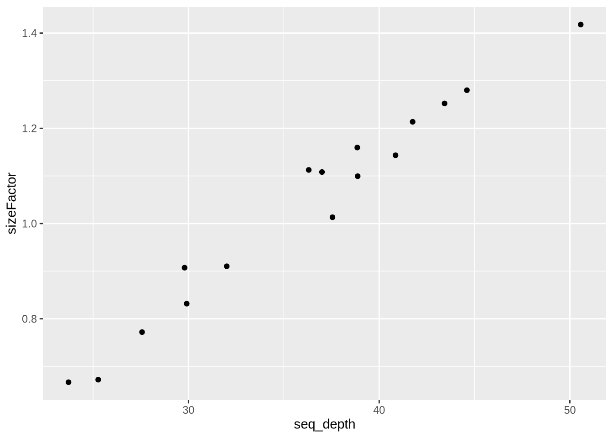
Observation:. No outliers. sizeFactors behaves as expected.
Task (5 min): Study the effect of sizeFactor normalization for a single gene. The code below is for unnormalized count data - with a simple modification you can obtain the normalized data.
gene <- dds_clean %>% counts() %>%
as_tibble(rownames='gene_id') %>% # tibble does not like rownames
filter(gene_id=="ENSG00000003509") %>% # pick gene (previously slice 42)
pivot_longer(-gene_id, names_to = "sample", values_to = "count") %>% # convert to long
inner_join(meta, by="sample")
gene %>%
ggplot(aes(x=condition, y=count, col=condition,shape=celltype)) +
geom_point(size=3) 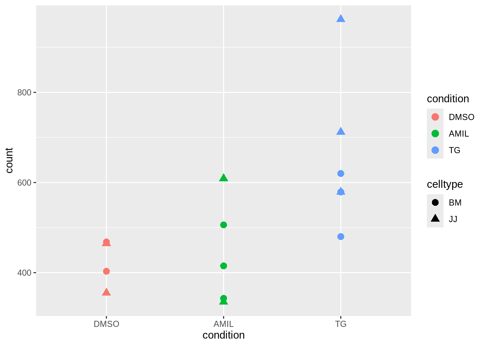
Discussion: What do you observe?
Poll 2.3 : what kind of distribution would be the most appropriate for this data ?
Variance estimates and dispersions
To determine if the expression of a gene differs between different factor levels, we will also need to estimate its variance.
In an ideal world we would have many replicates (per level combination) to estimate this variance.
In RNA-seq data we tend to only have a few replicates (\(n \propto 3\)) and we need strong assumptions on the expected distributions.
More specifically, it would be great if the variance could be estimated from the mean gene expression \(\mu\) (c.f. Poisson)
This hope drives much of the work in gene expression analysis, and the discussion below.
Let’s look at the empirical variance-mean relationship for all genes. To keep things simple let’s focus on 3 replicate samples from the same celltype (BM) and condition (AMIL):
# pick 3 replicates (3,4,5) from same celltype-condition combination (BM-AMIL)
dds_clean[, 3:5] %>% var_mu_plot## Warning in scale_x_log10(): log-10 transformation introduced infinite values.## Warning in scale_y_log10(): log-10 transformation introduced infinite values.## Warning: Removed 4709 rows containing non-finite outside the scale range
## (`stat_density2d()`).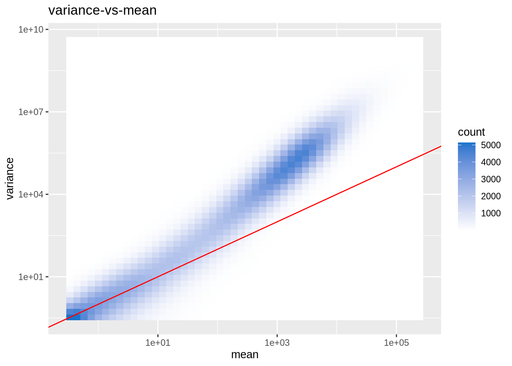
Notice:
- wide range of means
- many genes are not shown because of logarithmic scale and \(\mu=0 \to\) Warnings
- for large means: variance is larger than predicted by Poisson (red curve: \(Var = \mu\))
- for small means: variance fluctuates strongly (for few samples)
These properties are commonly observed for all RNA-seq experiments and these observations have guided the choice of distributions to be used for modelling of sequence counts.
Upshot: RNA-seq data (gene expression counts) are over-dispersed
\[ Var = \mu + \alpha \mu^2 \\ \]
and can be modeled with a negative binomial distribution
\[ Y \propto NB(\mu, \alpha) \\ \log \mu = X \beta \] with gene-specific dispersion parameter \(\alpha\).
Dispersion \(\alpha\) should account for the residual/unmodelled variation - assumed to be the same for all samples.
Empirically it has been found that \(\alpha\) may also depend on \(\mu\)
\[ \alpha = \alpha_0 + \alpha_1 / \mu \]
The estimation of \(\alpha(\mu)\) is part of the DESeq2 workflow and can be illustrated as follows
dds_clean %>% plotDispEsts
The black dots denote gene-wise estimates for dispersion \(\alpha\). For small number of samples, these dispersion estimates fluctuate strongly, and sometimes the estimates fail (\(NA \to 10^{-8}\))
The red line denotes an empirically trend for all genes there \(\alpha=\alpha(\mu)\) that we seek to exploit. In DESeq2 parlance, we share information across genes for a more robust (and opinionated) estimates of dispersion and variance.
The blue dots denote the adjusted estimates of \(\alpha\). Often the dispersion is correctecd upwards towards the empirical trend line. But genes with very high dispersion will not be adjusted - as this might overly reduce their variance (and increase the false positive).
Observations:
- genes with smaller mean should have larger dispersion (\(\to\) larger variance)
- genes with higher mean and higher variance are not effected \(\alpha \to \alpha_0\)
- dispersion estimates for very low mean become unreliable \(\to\) simulations
Simulations (optional)
DESeq2 provides a simple tools to generate synthetic RNA-seq data from a Negative Binomial distribution with known dispersion relation – default: \(\alpha(\mu) = 0.1 + 4 / \mu\).
To illustrate the challenges in estimating dispersion parameter, we simulate expression data with \(n=5000\) genes and \(m=6\) samples in two condition (A,B) with known \(\mu\) and \(\alpha\).
set.seed(42) # for reproducibility
# simulate RNA-seq data from NB with two different conditions (A,B) | run DESEQ
dds_sim <- makeExampleDESeqDataSet(n=5000, m=6, betaSD = 2) %>% DESeq(quiet=TRUE)
dds_sim %>% PCA_tm(groups=c("condition")) + ggtitle("Synthetic Data")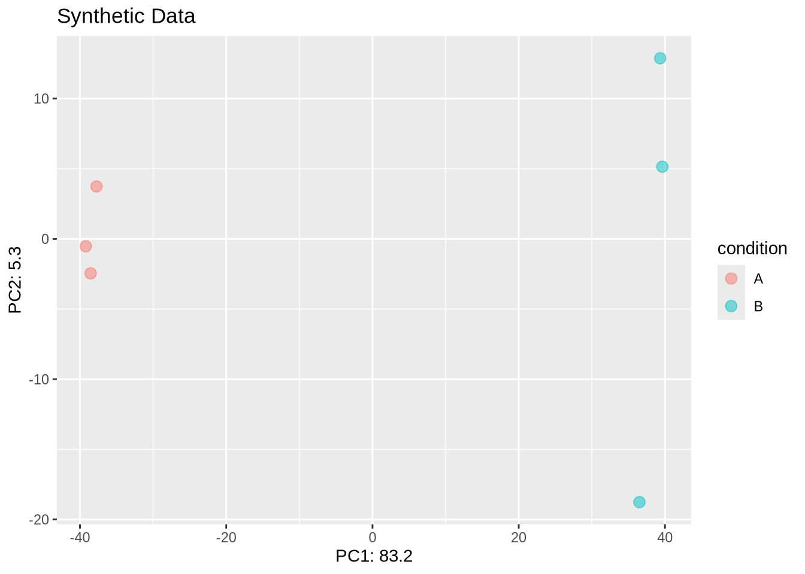
# dds_sim %>% plotDispEsts() # does not produce ggplot
p1 <- dds_sim %>% plotDisp + ggtitle("design: ~ 1 + condition")
p2 <- dds_sim %>% plotDispErr
p1 + p2 ## Warning in scale_x_log10(): log-10 transformation introduced infinite values.
## log-10 transformation introduced infinite values.
## log-10 transformation introduced infinite values.## Warning: Removed 49 rows containing missing values or values outside the scale range
## (`geom_point()`).
## Removed 49 rows containing missing values or values outside the scale range
## (`geom_point()`).## Warning: Removed 49 rows containing missing values or values outside the scale range
## (`geom_line()`).## Warning in scale_x_log10(): log-10 transformation introduced infinite values.## Warning: Removed 52 rows containing missing values or values outside the scale range
## (`geom_point()`).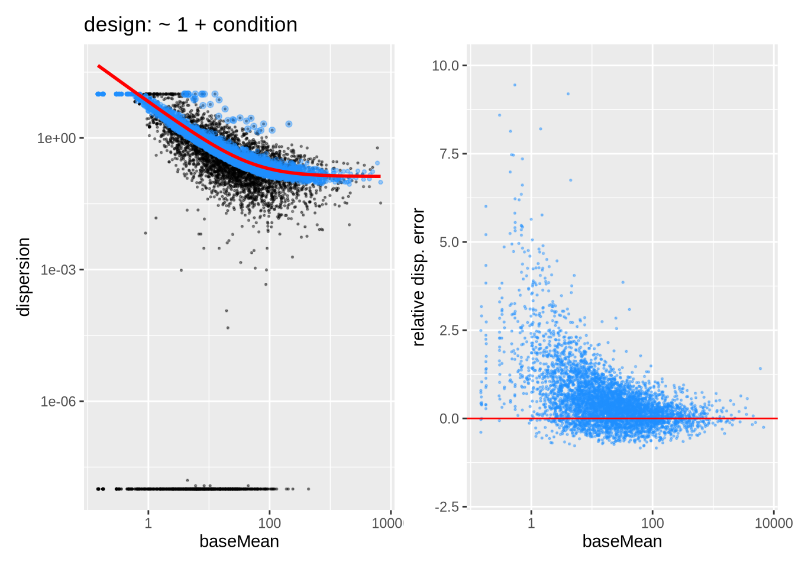
Dispersion Estimates for simulated data. n=5000 genes and m=6 samples.
# grid.arrange(p1, p2, ncol=1) # requires gridExtra packageNotice:
MLE estimates of dispersion parameters are difficult; both technically (iterations) and statistically (few samples, low counts). Therefore large uncertainty in those estimates is to be expected \(\to\) need to moderate
For a given sample number and reasonable designs, dispersion estimates tend to be more reliable for large baseMean. They will become even more reliable for larger sample number
The main concern is an underestimate of dispersion and variance \(\to\) overestimate of significance \(\to\) increase in false positives differential calls. Therefore the final dispersion estimates (blue) have been biased towards higher values, given the trend over all genes.
Pay attention: does the fit look reasonable? Poor fits may be related to poor designs or poor filtering of lowly expressed genes
Model fit and testing
Once the dispersion parameters (for each gene) are obtained, the “best” parameters \(\beta\) can be estimated by Maximum Likelihood.
For Normal distributions \(y \sim N(\mu, \sigma^2)\) this is easy and corresponds to the least squares formula for both \(\mu\) and \(\sigma^2\), But recall that we assume that the expression counts follow a negative bionmial distribution
\[ y \sim NB(\mu, \alpha) \\ \log \mu = X \beta \\ \alpha = \alpha_0 + \alpha_1 / \mu \]
In general the \(\beta\) will be obtained through an iterative maximization processes. Finally we get a fit for each gene, and a Wald test can be used to test for significance of coefficients of interest.
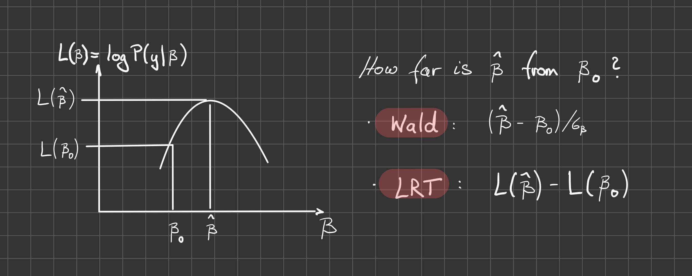
Notice: In our factorial analysis, \(\beta\) summarizes multiple parameters that may correspond to the different cell means or the differences with respect to some reference level - depending on our encoding of the model matrix.
By default DESeq tests the difference of the last coefficient and its deviation from zero, but in general we will be interested in specific differences (contrasts, linear combinations) among the \(\beta\) and test their deviation from zero
\[ c^T \beta = 0 \]
To be continued - tomorrow.
To obtain the test results for all genes, DESeq2 offers a convenient function: results().
Task (2 min) Please run results() on the dds_clean object and have a look at the result.
( dds_res <- dds_clean %>% results )## log2 fold change (MLE): condition TG vs DMSO
## Wald test p-value: condition TG vs DMSO
## DataFrame with 27351 rows and 6 columns
## baseMean log2FoldChange lfcSE stat pvalue
## <numeric> <numeric> <numeric> <numeric> <numeric>
## ENSG00000000419 2285.01560 0.317449 0.1790600 1.772863 7.62514e-02
## ENSG00000000457 775.42002 0.334962 0.0873551 3.834485 1.25827e-04
## ENSG00000000460 1300.43696 0.963262 0.0939353 10.254526 1.12928e-24
## ENSG00000000938 2.45443 -0.325046 0.7933991 -0.409688 6.82035e-01
## ENSG00000000971 1626.92877 0.309393 0.1271822 2.432678 1.49876e-02
## ... ... ... ... ... ...
## ENSG00000273486 40.217168 0.0672792 0.204936 0.328295 0.742689
## ENSG00000273487 0.162242 0.5041292 3.950877 0.127599 0.898466
## ENSG00000273488 13.780769 0.4674108 0.375660 1.244237 0.213412
## ENSG00000273489 1.064893 -1.1261042 1.341504 -0.839434 0.401226
## ENSG00000273492 0.856644 0.9590323 1.652038 0.580515 0.561568
## padj
## <numeric>
## ENSG00000000419 1.59065e-01
## ENSG00000000457 5.89362e-04
## ENSG00000000460 2.57159e-23
## ENSG00000000938 7.98272e-01
## ENSG00000000971 4.10219e-02
## ... ...
## ENSG00000273486 0.840324
## ENSG00000273487 NA
## ENSG00000273488 0.356482
## ENSG00000273489 0.565374
## ENSG00000273492 0.707109- baseMean: mean of normalized counts for all samples
- log2FoldChange: log2 fold change (the effect of interest)
- lfcSE: standard error
- stat: Wald statistic
- pvalue: Wald test p-value
- padj: BH adjusted p-values
Poll 2.4: What does a positive log2 foldChange and a significant padj value reflect ?
- how many genes do we get with padj < 0.05?
dds_res %>% subset(padj < 0.05) %>% nrow()## [1] 8532- get the 20 significantly expressed genes with the highest log2FoldChange.
dds_res %>%
data.frame() %>%
subset(padj < 0.05) %>%
arrange(-abs(log2FoldChange)) %>% head(20)- get overall summary
dds_res %>% summary(alpha=0.05)##
## out of 27351 with nonzero total read count
## adjusted p-value < 0.05
## LFC > 0 (up) : 3432, 13%
## LFC < 0 (down) : 5100, 19%
## outliers [1] : 11, 0.04%
## low counts [2] : 4773, 17%
## (mean count < 1)
## [1] see 'cooksCutoff' argument of ?results
## [2] see 'independentFiltering' argument of ?resultsExplore results
Task (5 min): MA plots Plot the log2Foldchange from the results DESeq results object against the logarithm of the baseMean.
Optional: highlight (with different colour) the differentially expressed genes based on some threshold on p-value, log2FoldChange etc. This is a very common plots, so DESeq also has a function for this: plotMA().
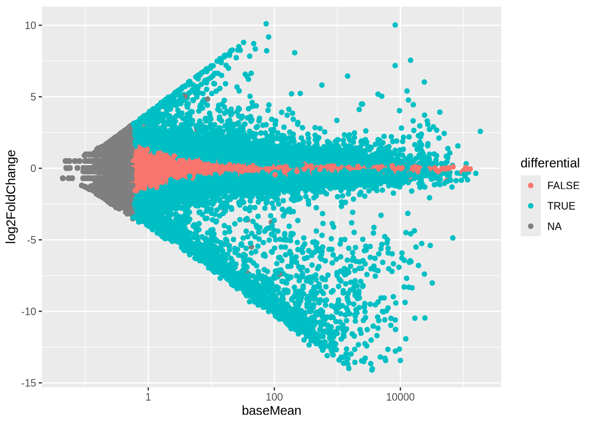
Task (5 min): Volcano plots Plot the adjusted p-value against estimate effect (log2FoldChange).
dds_res %>%
data.frame() %>%
mutate(differential = padj < 0.05) %>%
ggplot(aes(x=log2FoldChange, y=-log10(padj), colour=differential)) +
geom_point(alpha=0.5) +
xlim(c(-2,2)) +
ylim(c(0, 10))## Warning: Removed 8471 rows containing missing values or values outside the scale range
## (`geom_point()`).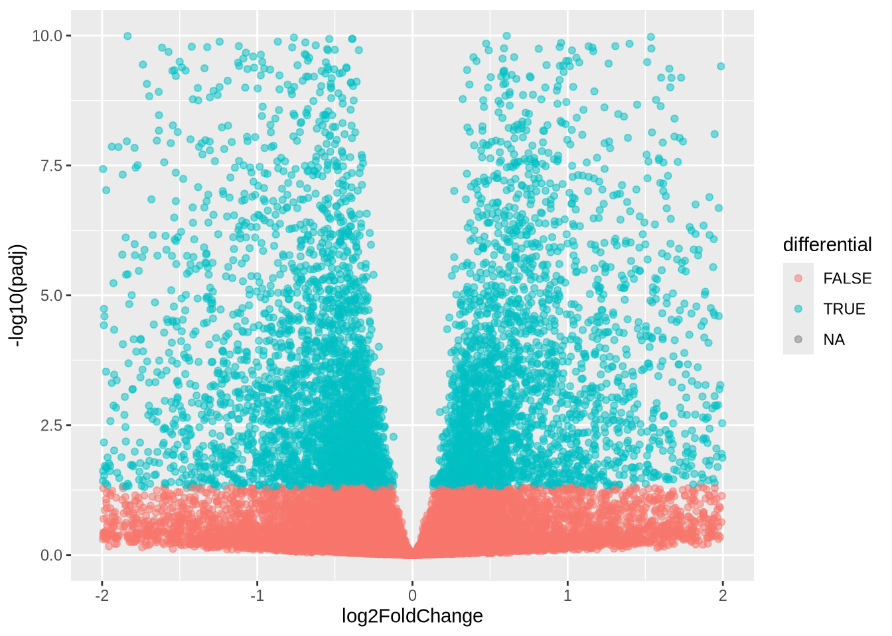
# scale_color_manual(values=c("black", "red")) +Export results
The results table is quite standardized and serves as input to many other tools.
Task (3 min): Please export your results table to a csv / tsv file.
hint: write_tsv, write_csv(), write.table(), write_delim() ,…
dds_res %>% data.frame %>%
# keep rownames as explicit column
rownames_to_column("gene_id") %>%
write_csv(file = "DMSO_vs_TG_BMcells.csv")For example, you might want to upload the file to our (MPI-IE internal) shiny apps (https://rsconnect.ie-freiburg.mpg.de/shiny/)
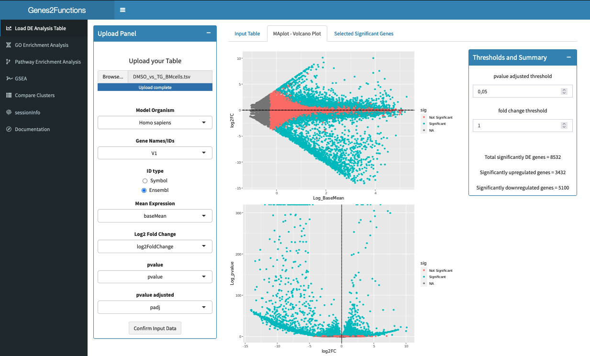